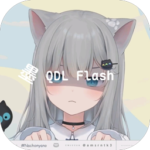
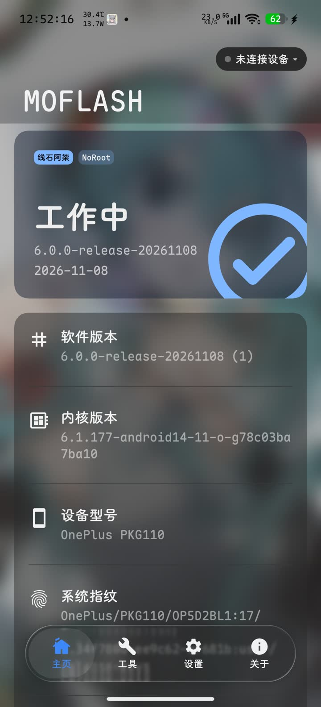
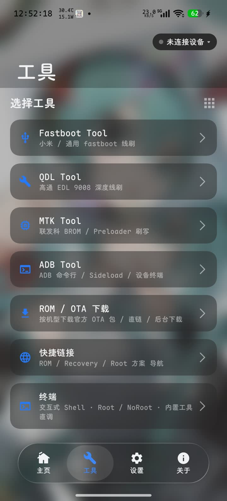
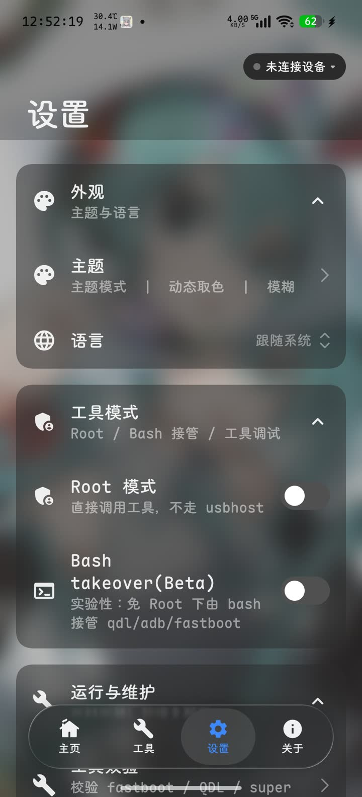

01
免 Root
不解 BL、不装 Magisk、不碰系统分区，普通用户开箱即用。

MOFLASH GitHub
借助手机原生的 USB Host 能力直连设备，把刷机所需的底层通信直接跑在 App 内。
一部手机 + 一根 OTG 线，即可完成 9008 深刷、Fastboot、MTK、ADB 全流程。
不解 BL、不装 Magisk、不碰系统分区，普通用户开箱即用。
手机直连，一根 OTG 线走完全流程，出门在外也能救砖。
9008 深刷、Fastboot、MTK、ADB 四大通道一应俱全。
Root 是可选项而不是门槛 —— 进阶玩家也能尽兴。
通过 USB Host 直连高通 9008 / EDL 端口完成深度刷机。掉进 9008、变砖救援、底层救回 —— 不 Root 也能进、也能刷。
免 Root 环境下直接进行 fastboot 分区刷写、镜像写入与设备读写。自动把 native 库软链成命令名，直接 exec 调用。
面向 MediaTek BROM / Preloader / DA 平台的线刷工具。选择 DA（必选）与 Preloader（可选）后即可对设备分区读写与擦除。
设备识别、授权与日常管理，一个 App 全搞定。内置交互式 Shell（Root / No Root）、Sideload 与文件操作。
选择刷机包目录后，自动列出目录下的 shell 脚本，选择需要的执行即可 —— 纯按脚本走，不做额外结构解析。
支持常规线刷与纯 FastbootD 两种模式，自动扫描镜像并预览分区，收尾可选清除设备数据。
从 payload.bin 中读取分区列表，按需选择解压，支持多线程与搜索。
对指定文件进行 Bootloader SN 修补。
MIUI / HyperOS 风格界面 + 液体玻璃效果，清晰的状态提示与沉浸式日志岛。



刷机前请确认已开启“未知来源安装”并授予 USB / 存储权限；如需参考使用说明与常见问题，请前往仓库 README。